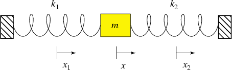

class: center, middle # Engineering Physics - Fall 2024 --- <h3 style="color: dodgerblue;">Mechanics <span style="color: black;font-size:50%;">\(\mu\eta\chi\alpha\nu\iota\kappa\eta~\tau\epsilon\chi\nu\eta~=~\)mode of action</span> </h3> <hr style="margin-top: 10px;margin-bottom: 10px;" /> <p style="color: tomato;font-size: 50%">Kinematics <span style="color: black;font-size:50%;">\(\kappa\iota\nu\eta\mu\alpha~=~\)motion</span> <span style="text-align: center;">description of motion disregarding <strong>forces.</strong></span> </p> <p style="color: tomato;">Dynamics <span style="color: black;font-size:50%;">\(\delta\upsilon\nu\alpha\mu\iota\zeta~=~\)force</span> <span style="text-align: center;">motion of <strong>bodies</strong> under the action of <strong>forces.</strong></span> </p> <hr style="margin-top: 10px;margin-bottom: 10px;" /> <p style="color: black;font-size: 16px;"> As their <span style="color: dodgerblue;font-size:150%;">\(1^{st}\) law</span>, Galileo and Isaac realized that if they (and no one else and nothing else) disturbs an apple, its <strong>velocity</strong> will not change: \[ \frac{d}{dt}\vec{v}=0\quad. \] Seemingly more rebellious, Isaac ventured to quantify the effect of an external disturbance of the state of an object. </p> - <span style="color: gray;font-size:70%;">Clearly, the apple's velocity changed from when the wind detached it and the moment it fell into my lap.</span> - <span style="color: gray;font-size:70%;">However, there must be more to the state of an apple than its velocity, as smaller/lighter apples did not fall. $$\text{apple's state: inertia $\times$ velocity = momentum:}$$ $$\vec{p}=m~\vec{v}$$ </span> --- <p style="color: black;font-size: 16px;text-align: center;"> So <strong>Isaac</strong> proposed for the way the apple's state changes: </p> <div style="text-align: center;"> \( \vec{p}(t+\Delta t)=\vec{p}(t)+ \) <i class="fa fa-bolt" aria-hidden="true" style="color: tomato; font-size: 160%;"></i> \( \cdot\Delta t \) </div> <p style="color: black;font-size: 16px;text-align: center;"> For the instantaneous change of state at time \(t\): </p> <div style="text-align: center;"> \( \lim\limits_{\Delta t\to 0}\frac{\vec{p}(t+\Delta t)-\vec{p}(t)}{\Delta t}=\frac{d}{dt}\vec{p}= \) <i class="fa fa-bolt" aria-hidden="true" style="color: tomato; font-size: 160%;"></i> \( \equiv \) <a style="color: tomato;font-size: 120%;">\(\vec{\text{Force}}\)</a> </div> <p style="color: black;font-size: 16px;text-align: center;margin-top: 20px;"> <strong>Isaac</strong>: \(\frac{d}{dt}m=0\), and my <span style="color: dodgerblue;font-size:150%;">\(2^{nd}\) law</span> reads: <div style="background: lightskyblue; padding: 1px;border-radius: 25px;width: 60%;margin: auto;"> \begin{eqnarray} \frac{d}{dt}p_x=ma_x=m\frac{dv_x}{dt}=m\frac{d^2r_x}{dt^2}\equiv F_x\\ \frac{d}{dt}p_y=ma_y=m\frac{dv_y}{dt}=m\frac{d^2r_y}{dt^2}\equiv F_y\\ \frac{d}{dt}p_z=ma_z=m\frac{dv_z}{dt}=m\frac{d^2r_z}{dt^2}\equiv F_z \end{eqnarray} </div> </p> <p style="color: black;font-size: 16px;text-align: center;margin-top: 20px;"> Three equations which are succinctly written as one vector equation: <div style="color: dodgerblue;font-size: 150%;"> \[ \vec{F}=m\vec{a} \] </div> </p> --- <p style="color: black;font-size: 16px;text-align: center;margin-top: 20px;"> This equation marks (\(\sim 1686\)) the onset of a new era in science: <div style="color: dodgerblue;font-size: 130%;"> "Sum up all disturbances and you can predict the future!" </div><div> \[ \vec{F}_\text{friction}+\vec{F}_\text{gravity}+\vec{F}_\text{spring/Hooke}+\vec{F}_\text{electric}+\ldots=\sum_{\text{all forces}}\vec{f}=m\vec{a} \] </div> </p> <p style="color: black;font-size: 12px;text-align: center;margin-top: 20px;"> Visualization in a <a style="color:tomato;">free-body diagram:</a> </p> - <strong>one</strong> body - attach all <strong>external</strong> force vectors acting on the body to <strong>center</strong> (of mass) - include coordinate system <div class="responsive"> <div class="gallery"> <a target="_blank" href="/images/FBD_1.png"> <img src="/images/FBD_1.png" alt="Cinque Terre" width="600" height="400"> </a> <div class="desc">Draw separate FBD's including gravitational and normal forces even if the cancel one another.</div> </div> </div> <div class="responsive"> <div class="gallery"> <a target="_blank" href="/images/FBD_2.png"> <img src="/images/FBD_2.png" alt="Forest" width="600" height="400"> </a> <div class="desc">Find the tension.</div> </div> </div> <div class="responsive"> <div class="gallery"> <a target="_blank" href="/images/FBD_3.png"> <img src="/images/FBD_3.png" alt="Northern Lights" width="600" height="400"> </a> <div class="desc">Assume that the system does not move. Express the angles as functions of \(m_{1,2,3}\).</div> </div> </div> <div class="responsive"> <div class="gallery"> <a target="_blank" href="/images/FBD_4.png"> <img src="/images/FBD_4.png" alt="Mountains" width="600" height="400"> </a> <div class="desc">Assume that a static, frictional force \(f\) keeps the block stationary until the angle \(\theta\) reaches a critical value. What is this value \(\theta_c\) if you assume that below that, \(f\) always equals the downward pull?</div> </div> </div> <div class="clearfix"></div> <p style="color: tomato;font-size: 12px;text-align: center;margin-top: 20px;"> Pulleys, ropes are assumed massless, and ropes glide frictionless on pulleys. At each point <strong>inside</strong> a rope the tension in opposite directions is equal. At the connection points to an object, the ropes exert the force of tension on those objects. </p> --- <div class="grid-container" style="background: white;grid-template-columns: auto;" > <div class="grid-item"> <span style="text-align: center;font-size: 16px;"> <strong>Idea:</strong> Understand the discrete form of \[m\frac{d^2\vec{r}(t)}{dt^2}=\vec{F}(x)\] as a <strong>recurrence relation</strong> for position and velocity. </span> <br> <ul style="list-style-type:square;text-align: left;font-size: 16px;"> <li style="margin-bottom: 10px;">Represent the disturbing force as a function of position, time, and velocity<br> <div style="font-size:10px;color:tomato;">e.g.: <p></p> \(F(x)=k_1(x_1-x)+k_2(x-x_2)\)</div> <li style="margin-bottom: 10px;">Set \(x_0\) and \(v_0\) (initial conditions)</li> <li style="margin-bottom: 10px;">Repeat the following block for \(t=0,\,\Delta,\,2\Delta,\,\ldots:\)</li> <div style="border: 1.5px solid darkred;margin-top: 5px;margin-bottom: 5px; padding-right: 5px;padding-top: 2px;padding-bottom: 3px;"> <ol style="font-size: 12px;"> <li style="margin-bottom: 5px;"> Update the position: \( x_{t+\Delta}=x_t+\Delta\,v_{t'} \) with earlier velocity and position<br> <div style="font-size:10px;color:dodgerblue;"> (explore the different options: \(t'=t+\kappa\cdot\Delta\) with \(\kappa\in[0,1]\))<br> </div> </li> <li style="margin-bottom: 0px;"> Update the velocity: \( v_{t'}=v_{t'-\Delta}+\frac{\Delta}{m}\,F(x_t) \) <br> with \(v_{\kappa\Delta}=v_{0}+\frac{\kappa\Delta}{m}\,F(x_t)\) for the special case \(t=0\) </li> </ol> </div> </ul> <br> <a href="./1dsimul.html" style="display: inline-block;text-align: center;background-color: gray;color: white;padding: 8px 10px;border-radius: 25px;"> Interactive Python lab <img src="./images/python.svg" width=26 height=26> </i></a> <p style="color: black;font-size: 12px;text-align: center;"> <strong>Usage:</strong> modify to your likes and then click <i class="fa fa-caret-right" style="color:green;font-size: 220%;"></i> </p> </div> </div>